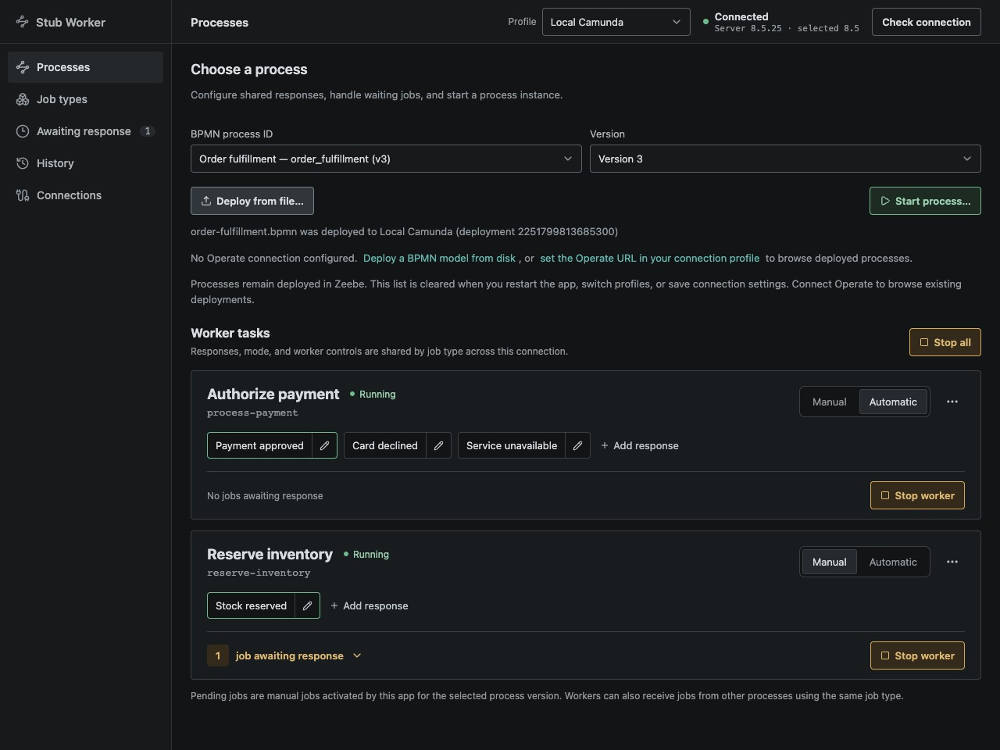
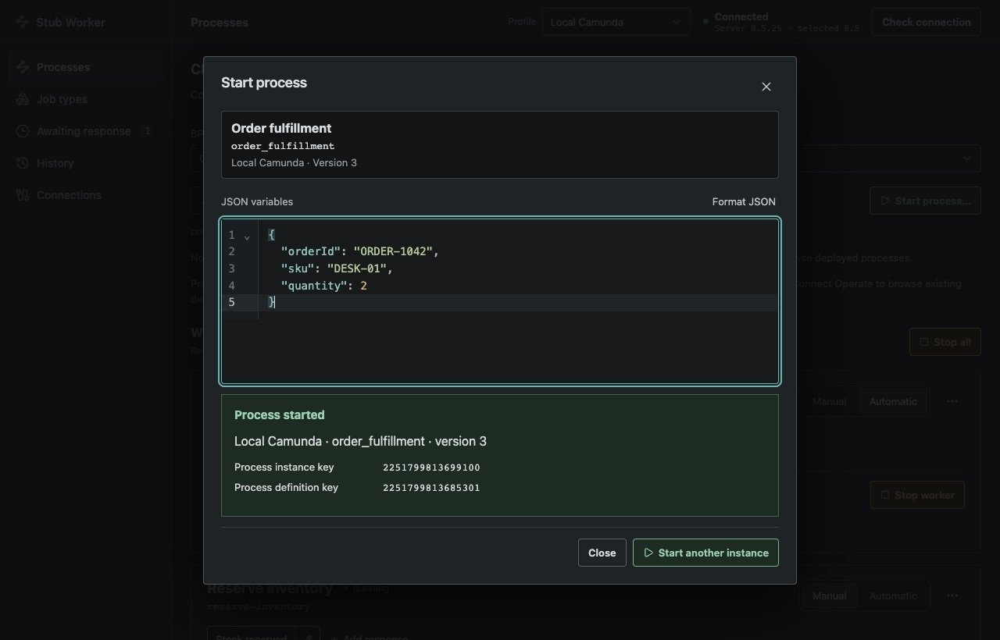
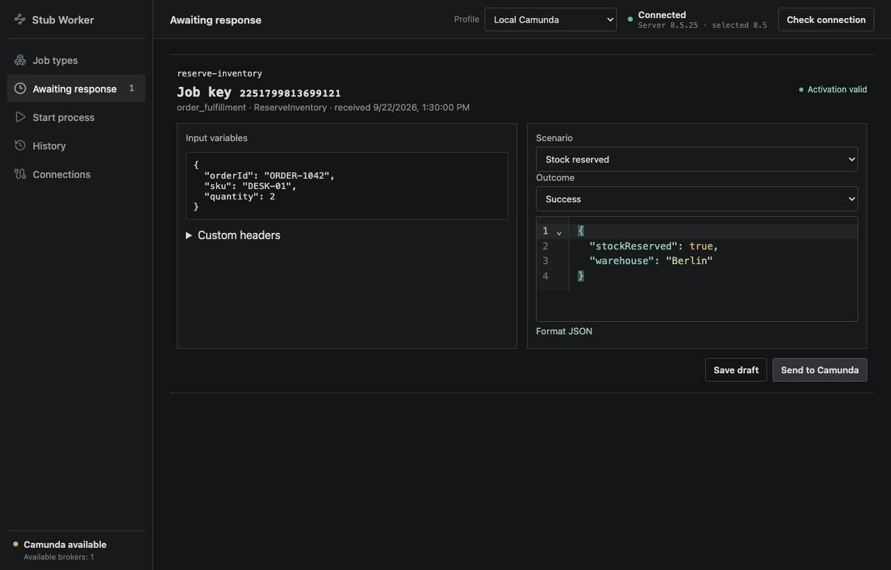
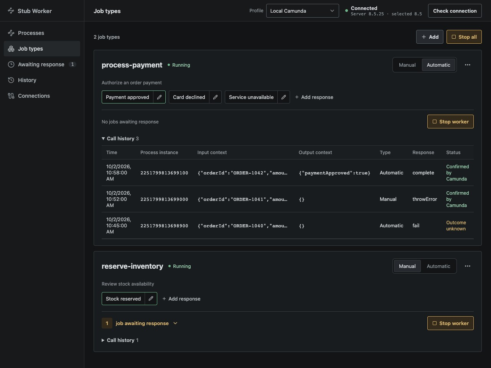
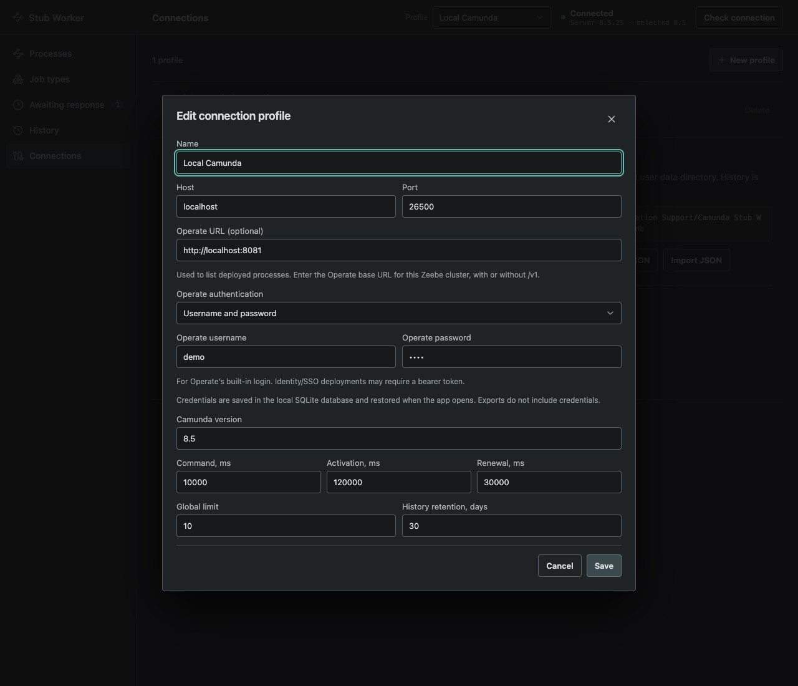

Test your process.
Stub the workers.
Start a deployed process, choose how its jobs respond, and inspect the results. A desktop app for local Camunda 8 development, without writing worker code.
macOS · Windows · Linux

Choose the outcome. Return success, throw a business error, or simulate a technical failure.
Control the response. Run automatically or inspect and respond to jobs manually.
Start from the app. Pick a deployed process and version - from Operate, or from a model you deployed from disk - configure its worker responses, then supply JSON variables.
From deployment to process instance.
Browse deployed processes through the Operate API, or deploy a BPMN model from disk with one click. Choose a version, configure shared responses on its worker tasks, then open Start process to add JSON variables and get the new instance key. Without Operate you can deploy, configure workers, and start instances entirely from the app.
Models stay deployed in Zeebe. The app's list of file deployments clears when you restart, switch profiles, or save connection settings. Connect Operate to reload existing deployments, or deploy the model again to select it without Operate. If a deployment result is uncertain, check Camunda before retrying.

Inspect a job before you respond.
Start manual workers directly from a process task or with Start all, even without saved responses. Review input variables and choose a saved response, or select Custom to edit response JSON before sending it. For automatic mode, add and select a saved response. Review response attempts in History.

See what each worker received and sent.
Expand Call history on a worker in Processes or Job types to review its latest 50 entries, including calls without a response attempt. See input and output variables, the process instance, response command, and send status. Select a row to inspect the activation and its send attempts.

Set up your connection once.
Keep your Zeebe address, Operate URL, and authentication in one connection profile. Use an Operate username and password, a bearer token, or no authentication. Saved settings are restored when you reopen the app.

Configuration and history stay on your computer. Saved passwords and tokens are stored in plaintext in the local SQLite database and omitted from profile exports.
Screenshots show the current frontend with isolated sample data and simulated backend responses.
For local Zeebe connections; verified with 8.5.25. The optional Operate v1 connection must point to the same cluster; without it, deploy BPMN models from disk in the app. Builds are unsigned. See installation and requirements.